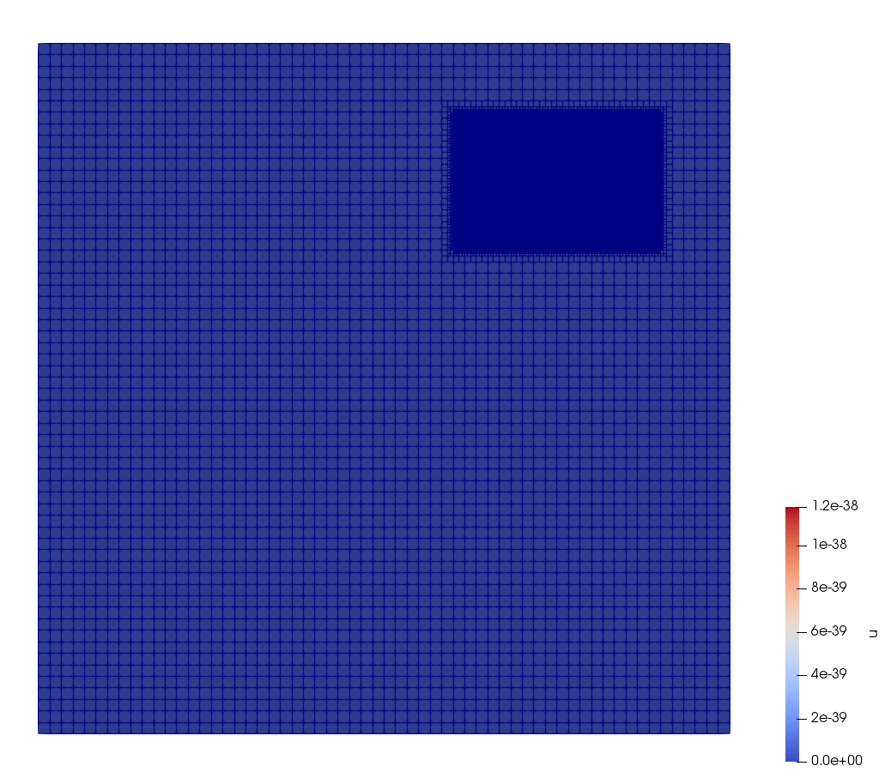
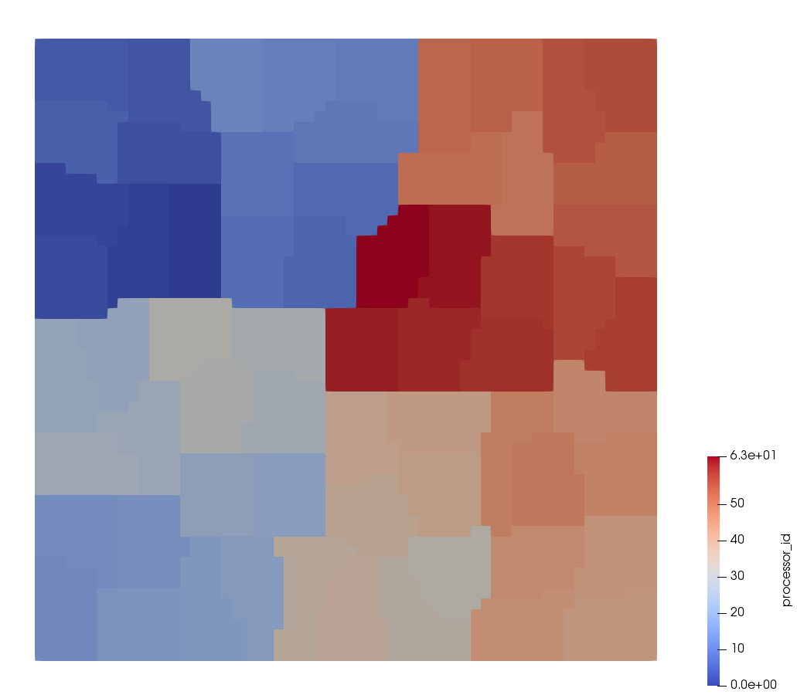
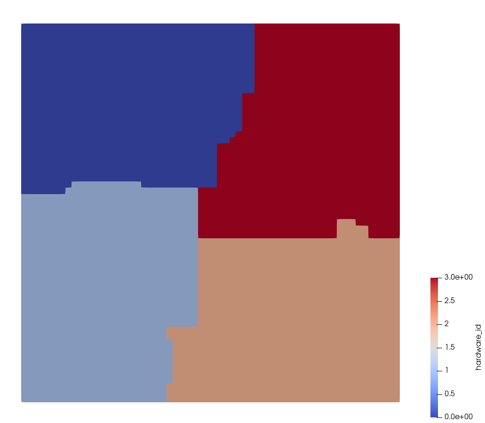
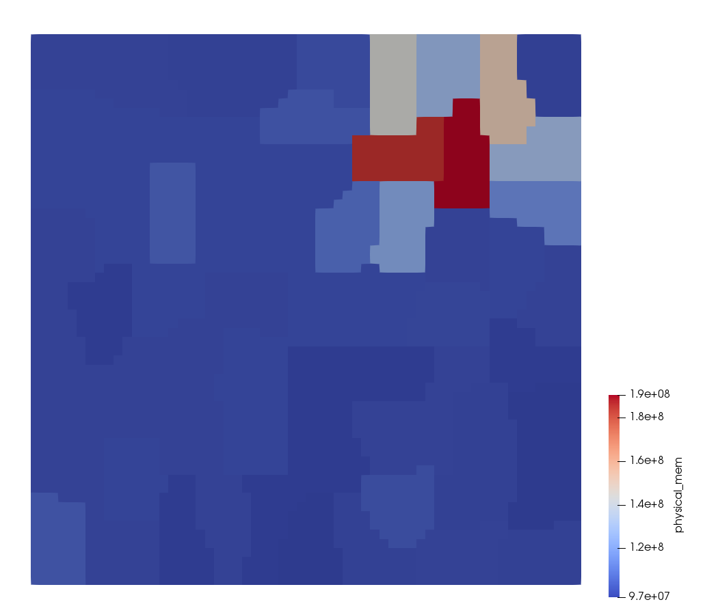
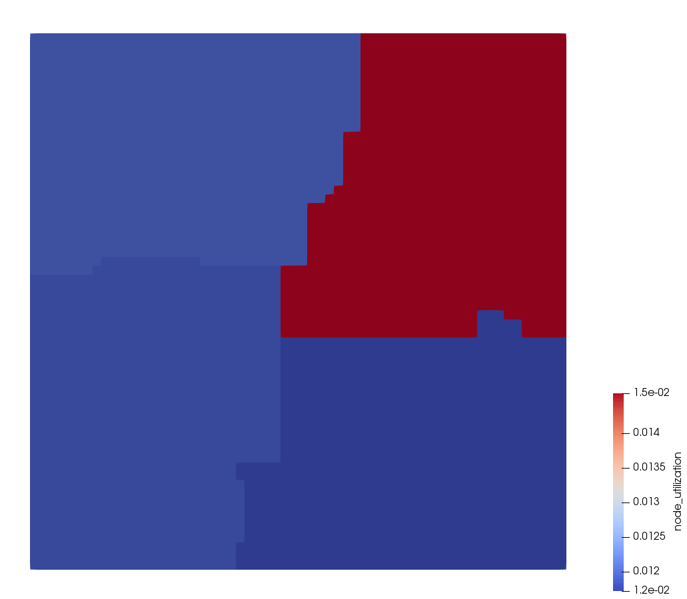

- contains_complete_historyFalseSet this flag to indicate that the values in all vectors declared by this VPP represent a time history (e.g. with each invocation, new values are added and old values are never removed). This changes the output so that only a single file is output and updated with each invocation
Default:False
C++ Type:bool
Controllable:No
Description:Set this flag to indicate that the values in all vectors declared by this VPP represent a time history (e.g. with each invocation, new values are added and old values are never removed). This changes the output so that only a single file is output and updated with each invocation
- execute_onTIMESTEP_ENDThe list of flag(s) indicating when this object should be executed, the available options include NONE, INITIAL, LINEAR, NONLINEAR, TIMESTEP_END, TIMESTEP_BEGIN, FINAL, CUSTOM, ALWAYS.
Default:TIMESTEP_END
C++ Type:ExecFlagEnum
Controllable:No
Description:The list of flag(s) indicating when this object should be executed, the available options include NONE, INITIAL, LINEAR, NONLINEAR, TIMESTEP_END, TIMESTEP_BEGIN, FINAL, CUSTOM, ALWAYS.
- mem_unitsmebibytesThe unit prefix used to report memory usage, default: Mebibytes
Default:mebibytes
C++ Type:MooseEnum
Controllable:No
Description:The unit prefix used to report memory usage, default: Mebibytes
- parallel_typeREPLICATEDSet how the data is represented within the VectorPostprocessor (VPP); 'distributed' indicates that data within the VPP is distributed and no auto communication is preformed, this setting will result in parallel output within the CSV output; 'replicated' indicates that the data within the VPP is correct on processor 0, the data will automatically be broadcast to all processors unless the '_auto_broadcast' param is set to false within the validParams function.
Default:REPLICATED
C++ Type:MooseEnum
Controllable:No
Description:Set how the data is represented within the VectorPostprocessor (VPP); 'distributed' indicates that data within the VPP is distributed and no auto communication is preformed, this setting will result in parallel output within the CSV output; 'replicated' indicates that the data within the VPP is correct on processor 0, the data will automatically be broadcast to all processors unless the '_auto_broadcast' param is set to false within the validParams function.
- prop_getter_suffixAn optional suffix parameter that can be appended to any attempt to retrieve/get material properties. The suffix will be prepended with a '_' character.
C++ Type:MaterialPropertyName
Controllable:No
Description:An optional suffix parameter that can be appended to any attempt to retrieve/get material properties. The suffix will be prepended with a '_' character.
- report_peak_valueTrueIf the vectorpostprocessor is executed more than once during a time step, report the aggregated peak value.
Default:True
C++ Type:bool
Controllable:No
Description:If the vectorpostprocessor is executed more than once during a time step, report the aggregated peak value.
VectorMemoryUsage
Get memory stats for all ranks in the simulation
This vector postprocessor generates multiple output columns with one row per MPI rank
| Column name | Description |
|---|---|
hardware_id | Ranks with a common hardware ID share common RAM (i.e. are located on the same compute node)| |
total_ram | Total available RAM on the compute node the respective MPI rank is located on.| |
physical_mem| Physical memory the current rank uses (default unit: MBs).| | |
virtual_mem | Virtual memory the current rank uses (the amount returned strongly depends on the operating system and does not reflect the physical RAM used by the simulation - default unit: MBs).| |
page_faults | Number of hard page faults encountered by the MPI rank. This number is only available on Linux systems and indicates the amount of swap activity (indicating low performance due to insufficient available RAM)| |
node_utilization | Indicates which fraction of the total RAM available on the compute node is occupied by MOOSE processes of the current simulation.| |
For a Postprocessor that provides min/max/average memory statistics see MemoryUsage.
Example visualizations
This VectorPostprocessor can be visualized using the VectorPostprocessorVisualizationAux AuxKernel. Both the IDs:

Refined grid

Processor id (using ProcessorIDAux)

Hardware id (i.e. compute node)
and the memory used:

Physical memory used by rank

Fraction of RAM used by the current simulation on the compute node
Input Parameters
- allow_duplicate_execution_on_initialFalseIn the case where this UserObject is depended upon by an initial condition, allow it to be executed twice during the initial setup (once before the IC and again after mesh adaptivity (if applicable).
Default:False
C++ Type:bool
Controllable:No
Description:In the case where this UserObject is depended upon by an initial condition, allow it to be executed twice during the initial setup (once before the IC and again after mesh adaptivity (if applicable).
- control_tagsAdds user-defined labels for accessing object parameters via control logic.
C++ Type:std::vector<std::string>
Controllable:No
Description:Adds user-defined labels for accessing object parameters via control logic.
- enableTrueSet the enabled status of the MooseObject.
Default:True
C++ Type:bool
Controllable:Yes
Description:Set the enabled status of the MooseObject.
- force_postauxFalseForces the UserObject to be executed in POSTAUX
Default:False
C++ Type:bool
Controllable:No
Description:Forces the UserObject to be executed in POSTAUX
- force_preauxFalseForces the UserObject to be executed in PREAUX
Default:False
C++ Type:bool
Controllable:No
Description:Forces the UserObject to be executed in PREAUX
- force_preicFalseForces the UserObject to be executed in PREIC during initial setup
Default:False
C++ Type:bool
Controllable:No
Description:Forces the UserObject to be executed in PREIC during initial setup
- outputsVector of output names were you would like to restrict the output of variables(s) associated with this object
C++ Type:std::vector<OutputName>
Controllable:No
Description:Vector of output names were you would like to restrict the output of variables(s) associated with this object
- use_displaced_meshFalseWhether or not this object should use the displaced mesh for computation. Note that in the case this is true but no displacements are provided in the Mesh block the undisplaced mesh will still be used.
Default:False
C++ Type:bool
Controllable:No
Description:Whether or not this object should use the displaced mesh for computation. Note that in the case this is true but no displacements are provided in the Mesh block the undisplaced mesh will still be used.